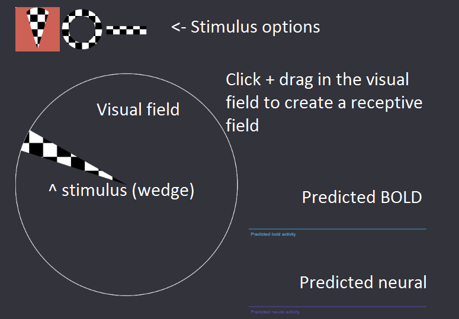
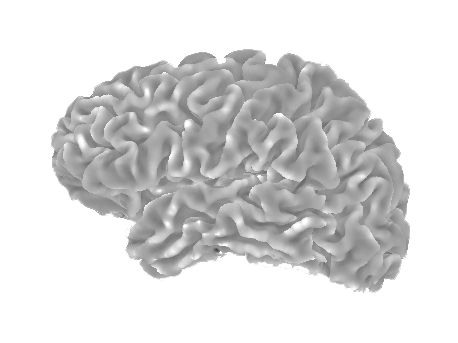
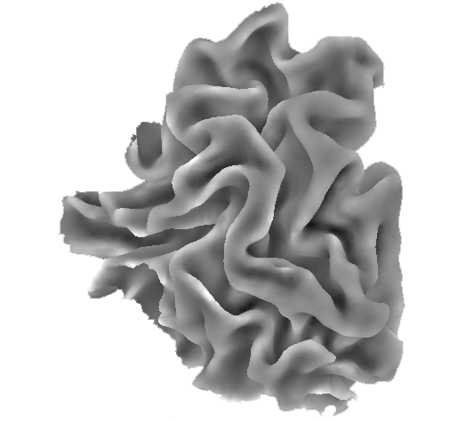
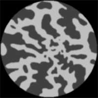
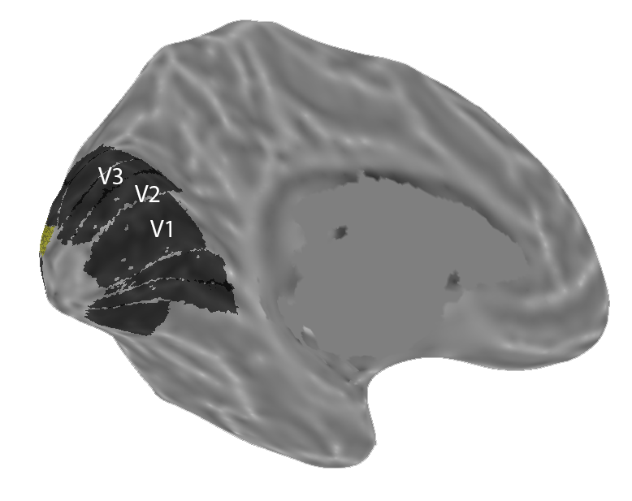
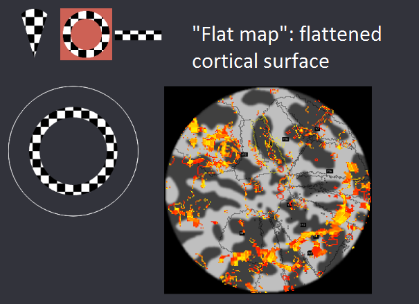
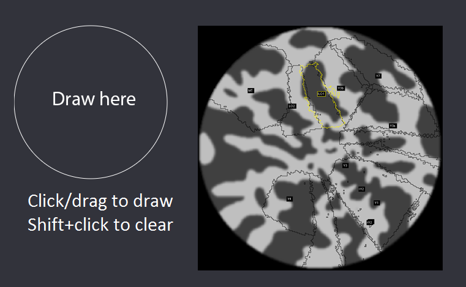

Receptive field tutorial
This tutorial is focused on helping you understand how receptive field mapping is performed today in fMRI experiments. Receptive field mapping is used to identify what part of the visual field a voxel is responsive to. You'll be coding the models introduced in this tutorial as you go along--the tutorial is focused on helping you build an intuition about what kind of data you should expect to see.
Learning goals
After this tutorial you should have a better understanding of the following:- How the receptive field of neurons in visual cortex is identified using high contrast visual stimuli.
- How visual cortex shows a topography of receptive fields and how we can use that to identify cortical regions.
- How we can use the population receptive field encoding model to study the spatial distribution of information in cortex.
Part 1: Voxel responses to visual stimuli
In visual cortex individual neurons show feature selecitivity, preferring some input types over others. One peculiarity of visual cortex is that neurons are not only feature selective but spatially selective: they have a receptive field, a region of the visual field that they respond to. This selectivity is inherited from the retina where small groups of closely spaced retinal ganglion cells are pooled together as they send signals to the lateral geniculate nucleus and then to early visual cortex.
This spatial organization is extremely compelling. Neurons in visual cortex turn out to be topographically laid out into maps, where each map covers a hemifield or half-hemifield. These maps have been named V1, V2, V3, and so on. It goes farther as well, as it turns out that there is some consistency in feature sensitivity across each map, so for example area MT covers a complete hemifield and is largely selective to motion direction, speed, and coherence. In contrast, area V4 shows sensitivity to color. Topographic organization and feature selectivity make visual cortex a great place to study sensory perception and cognitive functions.
In this first section we're going to zoom down to the individual voxel level and look at how a voxel's receptive field changes can be used to predict how it will respond to a stimulus. We've created a demonstration to help you gain an intuition for how this works. You'll use the three classic stimuli used during retinotopic mapping, the fMRI procedure of showing high contrast stimuli crossing the visual field to collect data usable to find receptive fields. You'll see a display like the one below and your goal will be to answer the questions on the next page. You'll be able to choose among the stimulus options and control them by moving your cursor around the visual field. Once you've created a receptive field (click and drag), you'll see that the encoding model will predict a certain amount of neural activity and BOLD response based on the overlap between the stimulus and the current receptive field.
Part 1: Voxel responses to visual stimuli
Use these questions to guide your exploration of the stimulus. You can click to select a different stimulus and you can click and drag in the visual field to create a receptive field.
- First simply explore the space a bit. Try creating different receptive fields and then testing how they respond to different overlaps of the stimuli. Can you predict the shape of the response based on your knowledge of neural activity and the related BOLD response?
- In classic retinotopy Wandell and colleagues used 12-second (?) periodic wedges and rings for mapping. They then used the phase to identify the angle and eccentricity that a given voxel preferred. They fit their data using sinusoids--try recreating this stimulus by hand, what positives and what negatives do you see to this approach?
- In more modern retinotopy researchers now fit the population receptive field model using bars. Try the bars out and then try to come up with a few reasons why bars a good stimulus to use, share these with your neighbor or the instructors.
- A common intuition among first-time retinotopy users is that it would be more efficient to show more bars at once, or display more things on the screen more quickly (note that usually the bars take 24 seconds to cross the screen, because we've accelerated the HRF here by about 3x you can mimic this by taking about 8 seconds to cross the field). Try showing faster moving bars to small and large receptive fields--what do you think limits your ability to tell where the receptive field is? If you move bars very quickly what kinds of problems does this cause?
When you're finished exploring the questions at the top of the page, continue with the MATLAB tutorial.
Part 2: Retinotopic maps in visual cortex
In visual cortex voxels that respond to neighboring regions of the visual field tend to cluster together. These form retinotopic maps that can be uncovered using the stimuli you just learned about. In the next demonstration we're going to show you examples of the retinotopic maps and how they respond to wedge, ring, and bar stimuli. This section is designed to help you gain an intuition about how these stimuli evoke responses across all of visual cortex.
On the next screen we're going to show you a flat map, which is a small piece of cortex flattened to make it easier to see the retinotopic areas. These would normally be folded into the surface of the brain. To generate a flat map we take the occipital cortex (the back of this brain), as shown on this image, and cut out just the back chunk.
Which gives us something like this:
We then "flatten" this out, coloring the sulci darker and gyri lighter to make it clear what the original topography was.
Notice that there are ROIs on this image--to orient you we can show you the original surface these were generated from. This version of it is "inflated", which again is a useful tool to see the topography of the retinotopic maps. Notice how the center of the map is right at the tip of the occipital cortex? In humans this is where we find voxels that have receptive fields in the fovea. Before you go on consider this question: in our data we don't usually map the fovea, why do you think that is?
In the next MATLAB sections you'll be working with these flat maps to understand how the wedge/ring/bar stimuli are useful for finding regions of cortex that respond with similar properties. You'll see a display like the one below and like before you'll be able to control the stimulus. This time, we'll show you the predicted cortical response based on the population receptive field encoding model. Yellow colors indicate strong responses, while a lack of color means that voxel is completely inactive.
Part 2: Retinotopic maps in visual cortex
- First, try using the ring stimulus. We've centered this flat map on the fovea, so you should see expanding responses leaving from that point and moving outwards. The first set of retinotopic maps in visual cortex (V1->V4) all spread out from this first fovea. Later retinotopic maps like MT, the ventral occipital maps, and the intraparietal maps have their own complete hemifields (fovea and periphery).
- Next try using the wedge stimulus. Notice how near vertical and horizontal you can identify the boundaries between retinotopic maps, at these points the maps "flip" and reverse direction. If that's confusing try drawing a picture on the whiteboard. With the wedge stimulus you should be able to clearly identify V1 to V3, and the instructors/TAs can help you identify some of the other maps on this flat map.
- Finally try the bar stimulus: notice that the bar stimulus doesn't make either the boundaries between regions or the fovea/periphery immediately obvious. The bar stimulus requires an encoding model to be useful--on its own it can't be used to map retinotopic cortex. In the next section of the tutorial you'll be focusing on building an encoding model that generates the kinds of maps we use to draw retinotopic maps.
When you're finished exploring the questions at the top of the page, continue with the MATLAB tutorial.
Part 3: Encoding and decoding
The population receptive field model is an encoding model--it specifies how a stimulus will be encoded as a representation in the brain. One popular use of encoding models is their power to decode, from just the measures of brain representations, what stimulus might have been shown in the world. Decoding has become a powerful tool for cognitive neuroscience and is now being used as part of the standard set of paradigms to test and understand cognition.
One use of decoding in vision is to get an estimate of how the brain is representing the visual world. When cognitive changes occur, for example when we focus our attention on a spatial location, we might expect that the brain's representation of the world will change even though the stimulus input remains the same. Other experiments pit two alternative stimuli against each other and then use our ability to "read out" which stimulus was shown as a measure of the brain representation's fidelity.
In the next slide you'll be shown a screen like the one below. The circle on the left represents the visual field, the flat map on the right is the flattended cortical surface of the left visual cortex. You'll see activity appear in response to the stimulus, according to whether each voxel is activated y a particular stimulus. You can click and drag to draw a stimulus, shift+click will clear the screen. Remember that this is the left visual cortex so stimuli in only some parts of the visual field will have an effect.
Part 3: Encoding and decoding
To test out how the pRF encoding model can be used to predict the respones for different stimuli try out the following. Remember you can click+drag to draw, and shift+click to clear.
- With your neighbor, each draw an X in the right hemifield, take a screenshot of the responses, then draw an O, and take a screenshot (command+shift+4 on a mac). Hide the demo page and open just the screenshots, then take a look at your neighbor's screenshots, can you tell which is the O and which is the X? Despite the noise you each added by drawing slightly different shapes, it should be pretty clear. This is how we use an encoding model to perform decoding: we make predictions about what we expect and compare them to reality. The predicted response that best matches reality informs us about which stimulus was most likely to have been shown.
When you're finished exploring the questions at the top of the page, continue with the MATLAB tutorial (this is the end of the demo).
Tutorial complete!
As a reminder the learning goals for this tutorial were to have a better understanding of:
- How the receptive field of neurons in visual cortex is identified using high contrast visual stimuli.
- How visual cortex shows a topography of receptive fields and how we can use that to identify cortical regions.
- How we can use the population receptive field encoding model to study the spatial distribution of information in cortex.